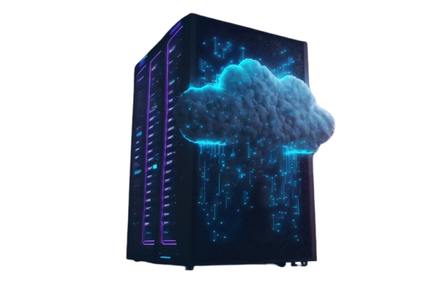
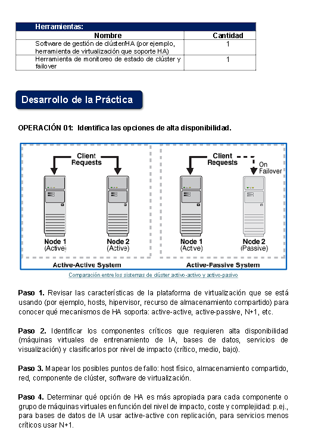
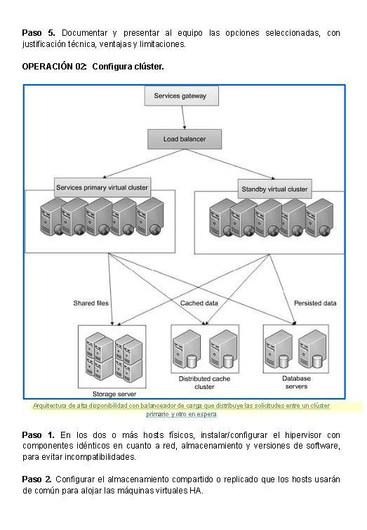
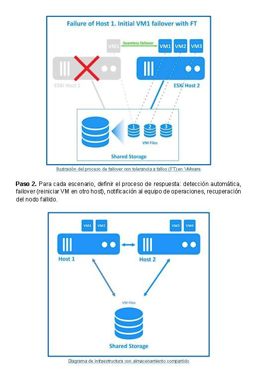
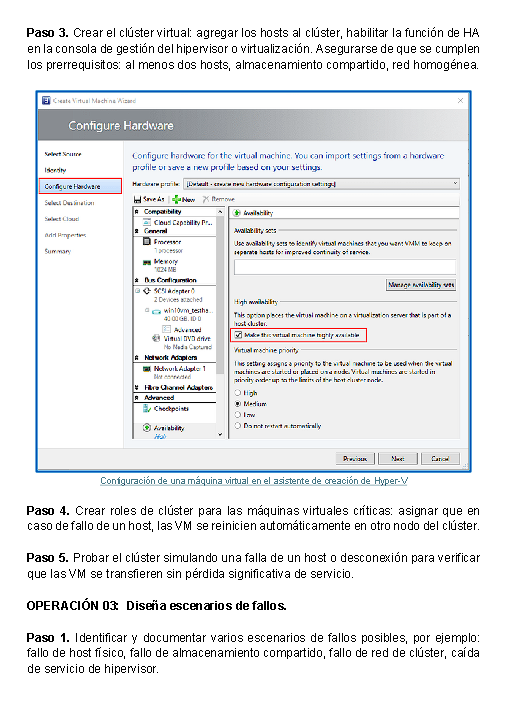

Virtualizacion
Entorno con al menos dos nodos fisicos o hosts.
Curso PICD-714
Es fundamental para garantizar que los sistemas criticos sigan operativos sin interrupciones. Mientras que la alta disponibilidad minimiza el tiempo de inactividad, la tolerancia a fallos asegura una operacion continua y sin fallos ante cualquier componente danado. [1, 2]

Al concluir la tarea, el participante podra evaluar los requisitos de disponibilidad de un entorno de ciencia de datos e IA, seleccionar opciones apropiadas, establecer un cluster funcional y disenar escenarios de tolerancia de fallos que aseguren continuidad operativa y reduzcan el tiempo de inactividad.
Objetivo de la Tarea
Caso practico
El equipo responsable detecto cargas criticas como procesamiento en lote, modelos de entrenamiento y bases de datos de apoyo. Estas cargas pueden verse afectadas por fallos de hardware o actualizaciones inesperadas, por lo que se requiere una estrategia de alta disponibilidad y tolerancia de fallos para servidores virtualizados.
Materiales
Entorno con al menos dos nodos fisicos o hosts.
SAN/NAS compartido o recurso de almacenamiento replicado.
Software de gestion de cluster o herramienta HA del hipervisor.
Herramienta para estado del cluster y pruebas de failover.
Que se necesita plantear
| Parte | Que se debe identificar | Que se debe explicar | Evidencia esperada |
|---|---|---|---|
| Entorno | Hosts, maquinas virtuales, red, almacenamiento y servicios criticos. | Por que el laboratorio de datos e IA necesita continuidad operativa. | Inventario de componentes y diagrama general. |
| Disponibilidad | Opciones active-active, active-passive, N+1, replicacion y balanceo. | Ventajas, limitaciones, costo y nivel de proteccion de cada opcion. | Tabla comparativa y decision justificada. |
| Cluster | Requisitos para crear el cluster HA con dos o mas hosts. | Como se habilita HA y como se asignan VM criticas al cluster. | Capturas o descripcion de configuracion. |
| Fallos | Puntos de fallo en host, red, almacenamiento, cluster e hipervisor. | Proceso de deteccion, failover, notificacion, recuperacion, RTO y RPO. | Escenarios simulados y recomendaciones de mejora. |
Desarrollo de la practica
| Opcion HA | Uso recomendado | Explicacion breve |
|---|---|---|
| Active-active | Bases de datos o servicios de IA criticos. | Ambos nodos trabajan al mismo tiempo y reparten la carga. |
| Active-passive | Servicios importantes con presupuesto moderado. | Un nodo atiende y otro queda listo para asumir si ocurre un fallo. |
| N+1 | Conjunto de VM con necesidad de respaldo comun. | Se agrega un nodo extra para cubrir la caida de uno de los hosts. |

| Elemento | Necesidad | Motivo |
|---|---|---|
| Hosts | Minimo 2 nodos fisicos. | Permiten mover VM si uno falla. |
| Red | Conexion estable y preferiblemente redundante. | Evita aislamiento del cluster y perdida de comunicacion. |
| Almacenamiento | SAN/NAS compartido o discos replicados. | Las VM deben estar disponibles para el host que asuma el servicio. |

| Fallo | Respuesta esperada | Indicador |
|---|---|---|
| Host fisico | Failover de VM hacia otro host. | RTO bajo y servicio restaurado. |
| Red | Uso de enlace alterno o alerta de perdida. | Latencia, paquetes perdidos y continuidad. |
| Almacenamiento | Acceso mediante replica o ruta secundaria. | RPO aceptable y datos disponibles. |

Analisis de fallos
Las VM criticas reinician o migran automaticamente a otro nodo del cluster.
Se valida si el recurso compartido o replicado mantiene acceso a discos de VM.
Se revisa conectividad del cluster, acceso de clientes y comunicacion entre hosts.
Exposicion HT-09
Presentar el contexto del laboratorio de ciencia de datos e IA y explicar por que las cargas criticas necesitan alta disponibilidad.
Ver Integrante →Comparar active-active, active-passive, N+1, replicacion y balanceo para elegir una alternativa segun criticidad.
Ver Integrante →Identificar maquinas virtuales, bases de datos, red, almacenamiento y servicios de visualizacion dentro del entorno.
Ver Integrante →Explicar hosts, almacenamiento compartido, red homogenea, habilitacion de HA y asignacion de VM criticas.
Ver Integrante →Plantear fallos de host, red, almacenamiento, cluster e hipervisor, junto con RTO, RPO y proceso de recuperacion.
Ver Integrante →Resumir resultados, aprendizajes de la simulacion y mejoras para fortalecer la tolerancia de fallos.
Ver Integrante →Entregables
Inventario de hosts, VM, almacenamiento, red y cargas criticas de IA.
Comparacion de opciones y justificacion tecnica de la alternativa elegida.
Descripcion de hosts, almacenamiento, red, roles y prueba de failover.
Registro de fallos, impacto, RTO, RPO y mejoras para mayor tolerancia.

Checklist
Equipo expositor

Presenta el caso practico y el objetivo de la tarea.
Explica las opciones de alta disponibilidad.

Describe los componentes criticos del entorno IA.

Expone la configuracion del cluster y sus requisitos.

Presenta escenarios de fallo, RTO y RPO.

Cierra con resultados, recomendaciones y preguntas.
Integrante 1
Este integrante abre la exposicion. Debe explicar que la tarea HT-09 busca planificar alta disponibilidad y tolerancia de fallos para servidores virtualizados usados en ciencia de datos e inteligencia artificial.
"Nuestro caso practico trata sobre un laboratorio de ciencia de datos e inteligencia artificial. En este entorno existen cargas criticas como bases de datos, modelos de entrenamiento y procesamiento por lotes. Si un servidor falla, estas cargas pueden detenerse y afectar la continuidad del servicio. Por eso se plantea una arquitectura de alta disponibilidad y tolerancia de fallos."
| Parte | Introduccion general antes de las operaciones. |
|---|---|
| Tema | Laboratorio de infraestructura para datos e IA. |
| Debe plantear | Que servicios son criticos y que ocurriria si se detienen. |
| Frase guia | La continuidad operativa permite que las cargas de IA sigan disponibles aun cuando falle un componente. |
Integrante 2
Explica las opciones que puede usar la organizacion para evitar interrupciones. Debe comparar cada alternativa y justificar cual conviene segun impacto, costo y complejidad.
"En la Operacion 01 se identifican las opciones de alta disponibilidad. Primero se revisa que mecanismos soporta la plataforma de virtualizacion. Luego se comparan alternativas como active-active, active-passive y N+1. La eleccion depende de la criticidad del servicio, el costo, la complejidad y el nivel de proteccion requerido."
| Operacion | Operacion 01: identifica las opciones de alta disponibilidad. |
|---|---|
| Active-active | Dos nodos trabajan al mismo tiempo y reparten la carga. |
| Active-passive | Un nodo principal atiende y otro queda preparado para tomar el servicio. |
| N+1 | Un nodo adicional cubre la caida de uno de los hosts del cluster. |
Integrante 3
Presenta el inventario tecnico. Su parte consiste en mostrar que elementos necesitan mayor prioridad y donde podrian aparecer fallos dentro del entorno virtualizado.
"Dentro de la Operacion 01 tambien se deben clasificar los componentes criticos. En este entorno se consideran criticas las maquinas virtuales de procesamiento, las bases de datos, el almacenamiento y los servicios que apoyan el entrenamiento de modelos. Luego se identifican puntos de fallo como el host fisico, la red, el almacenamiento compartido y el hipervisor."
| Operacion | Operacion 01: clasificacion de componentes y puntos de fallo. |
|---|---|
| Critico | Bases de datos, modelos de entrenamiento, VM de procesamiento y almacenamiento. |
| Medio | Servicios de visualizacion, reportes y herramientas auxiliares. |
| Puntos de fallo | Host fisico, red, almacenamiento compartido, hipervisor y gestion del cluster. |
Integrante 4
Explica como se arma el cluster HA. Debe mencionar los requisitos previos y el proceso para agregar hosts, activar HA y asignar las VM criticas.
"En la Operacion 02 se configura el cluster. Para ello se necesitan al menos dos hosts fisicos, una red estable y un almacenamiento compartido o replicado. Despues se agregan los hosts al cluster, se habilita la funcion de alta disponibilidad y se asignan las maquinas virtuales criticas para que puedan reiniciarse en otro nodo si ocurre un fallo."
| Operacion | Operacion 02: configurar cluster. |
|---|---|
| Hosts | Minimo dos nodos con hipervisor compatible y versiones homogeneas. |
| Almacenamiento | SAN/NAS compartido o almacenamiento replicado para que las VM puedan moverse. |
| Prueba | Simular la caida de un host y validar que las VM se reinicien en otro nodo. |
Integrante 5
Presenta los escenarios que se deben simular y documentar. Tambien explica como se mide el impacto usando RTO y RPO para saber si la solucion cumple con el nivel de servicio esperado.
"En la Operacion 03 se disenan escenarios de fallo. Se pueden simular fallos de host, red, almacenamiento, cluster o hipervisor. Para cada escenario se define la respuesta: deteccion automatica, failover, notificacion al equipo y recuperacion del nodo. Tambien se estima el RTO y el RPO para medir el impacto real del fallo."
| Operacion | Operacion 03: disenar escenarios de fallos. |
|---|---|
| RTO | Tiempo maximo aceptable para recuperar el servicio despues del fallo. |
| RPO | Cantidad maxima de datos que se puede perder sin afectar gravemente la operacion. |
| Respuesta | Deteccion automatica, failover, alerta al equipo y recuperacion del nodo fallido. |
Integrante 6
Cierra la presentacion conectando lo aprendido con acciones de mejora. Debe responder las preguntas de retroalimentacion y explicar como reforzar la arquitectura HA.
"Como cierre, la simulacion permite comprobar si el cluster responde correctamente ante fallos. Si las maquinas virtuales se recuperan en otro host y el servicio continua, la arquitectura cumple su objetivo. Como mejoras se recomienda agregar mas nodos, usar red redundante, diversificar el almacenamiento y definir politicas de mantenimiento preventivo."
| Parte | Cierre de la exposicion y retroalimentacion. |
|---|---|
| Resultado | El cluster debe mantener disponibles las VM criticas ante fallos simulados. |
| Mejoras | Agregar nodos, diversificar almacenamiento, mejorar red y programar mantenimiento. |
| Cierre | La alta disponibilidad reduce interrupciones y protege procesos importantes de IA. |
Retroalimentacion
Se considero la criticidad del servicio, el impacto en usuarios, la dependencia de bases de datos, el tiempo maximo de interrupcion permitido y la importancia de las cargas de entrenamiento, procesamiento y almacenamiento.
El fallo de host fisico fue uno de los escenarios mas probables porque los servidores ejecutan varias VM criticas. Si un host cae, el cluster debe mover o reiniciar esas VM en otro nodo disponible.
La simulacion mostro que una arquitectura HA reduce el tiempo de inactividad. Tambien permitio observar la importancia de monitoreo, almacenamiento compartido, red estable y pruebas de failover antes de una falla real.
Se documento mediante tablas, diagramas, checklist, escenarios de fallo, medicion de RTO/RPO y registros de simulacion en terminal para explicar cada paso: deteccion, respuesta, migracion y recuperacion.
Se recomienda agregar mas nodos, usar red redundante, diversificar almacenamiento, aplicar monitoreo continuo, programar mantenimiento preventivo y definir politicas claras de respaldo y recuperacion.